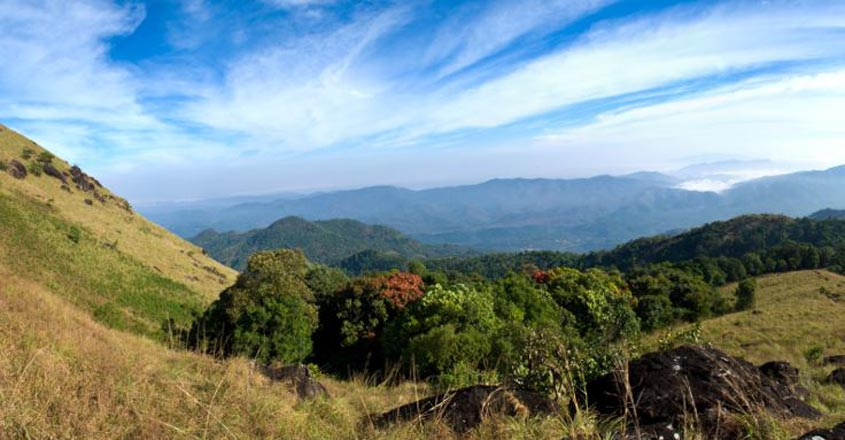

Kasaragod
(Est. - 24 May 1984)
Kasaragod is the north most district of Kerala. It is bound in the north and east by the state of Karnataka, in the West by the Arabian Sea and in the South by the Kannur District of Kerala. Its headquarters is the port town of Kasaragod. The district of Kasaragod is of extreme historic importance and boasts of historical architectures which are its tourist attractions. The beautiful beaches and picturesque landscape of the district are breathtaking.
These are two unique destinations to visit in Kasaragod.

Bekal Fort
